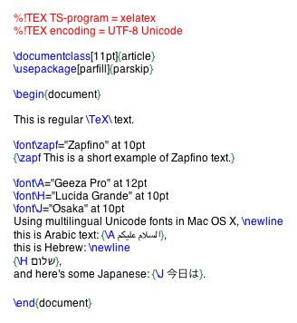
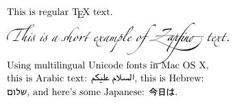

XeTeX and XeLaTeX
Recently, Jonathan Kew introduced XeTeX and XeLaTeX. These programs can use Macintosh fonts directly within a TeX document. XeTeX and XeLaTeX require unicode source and thus can deal with any unicode character; for example, with them you can type Arabic or Hebrew in the source document and later see Arabic or Hebrew in the output. TeXShop's editor will correctly input these characters from right to left. XeTeX is part of TeX Live, so it is installed by MacTeX. For additional details, consult
- http://scripts.sil.org/xetex
To understand how this works, here is a brief XeLaTeX source document, and the resulting output. The Arabic and Hebrew characters were obtained by accessing the International Panel in System Preferences, selecting the Input Menu tab, and checking Arabic and Hebrew; a small flag appeared on the menu bar and a user could switch keyboards by selecting an appropriate flag.


TeXShop now supports XeTeX and XeLaTeX:
- % !TEX encoding = UTF-8 Unicode
- % !TEX TS-program = xetex or % !TEX TS-program = xelatex